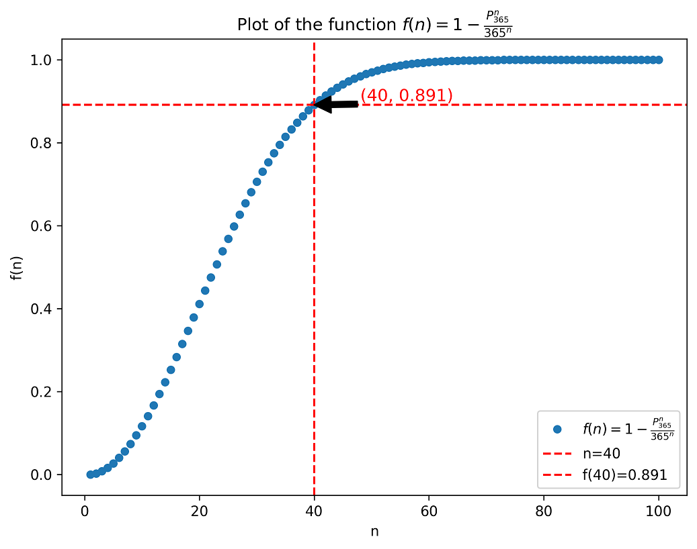
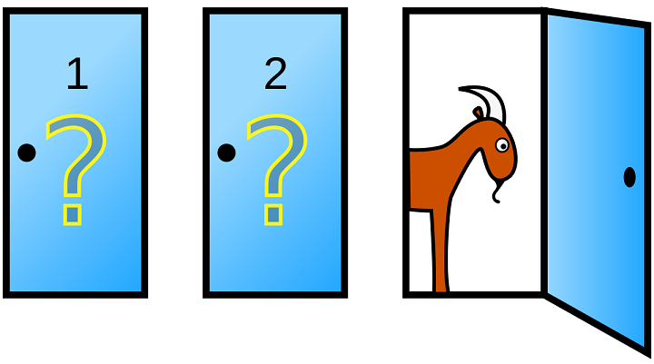
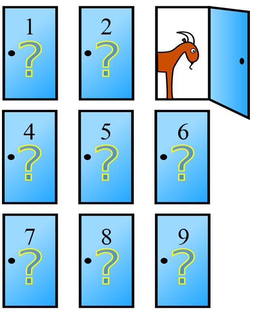
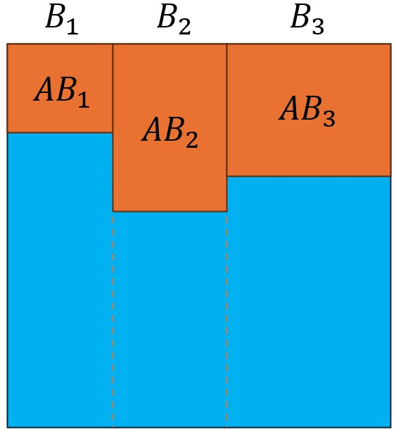
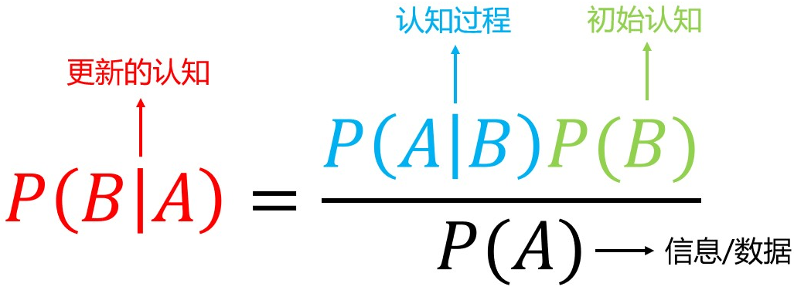

古典概型及一些经典问题
最基础的一些内容
- 概率三公理：非负；和为1；互斥可加
- 古典概率：有限个+等可能
1 古典概型中的生日问题
1.1 问题的引入
2014年的巴西世界杯，共有32支球队参与。其中有16支球队的球员有同天生日的情况。如巴西队的Hulk和Paulinho，他们的生日都是7月25号。我们知道，一支完整的足球队人数为23人，那么2014年，半数球队有队员同天生日，是否是偶然的呢？
1.2 概率的角度
我们先来解决这个问题：假设每个人的生日在365天中任意一天的概率是相同的，那么23人中，至少两人的生日在同一天的概率是多少？
从问题的反面来考虑会比较容易，记事件$A$为所有人的生日都不同，那么这个事件的反面事件$B$就是至少两人的生日在同一天。我们所要求的就是：
$$ P(B)=1-P(A) $$考察事件$A$：由于每个人的生日在一年中任何一天的概率是相同的，因此分母（所有可能的组合）为：$365^{23}$，即每个人的生日都有可能在365天中任意一天。分子为：$P_{365}^{23}$，可以这么考虑：第1个人选365天中任意一天，第2个人在剩下364天里选一天…以此类推。因此，最终我们要计算的概率：
$$P(B)=1-\frac{365\cdot364\cdot...\cdot(365-23+1)}{365^{23}}\approx0.507$$令人惊讶的是，这个概率竟然在50%左右！2014世界杯共有32支球队参加，每支球队有队员同天生日的概率大概是50%，那么计算一下期望，会发现大约有16支球队的球员存在同天生日的情况，与实际情况完全相符。
1.3 考虑$n$个人的情况
这似乎有些反直觉，现在我们考虑：$n(n \ge 2)$ 的情况，即$n$个人中，至少两人的生日在同一天。将概率式改写为函数，其自变量$n$表示人数，于是有：
$$f(n)=1-\frac{P_{365}^{n}}{365^{n}}$$
使用Python来绘制这个函数图像:
import matplotlib.pyplot as plt
import math
# Define the function f(n)
def f(n):
if n <= 1:
return 0
else:
p_a = math.perm(365, n)/(365**n)
return round(1 - p_a, 5)
# Generate values
n_values = list(range(1,101))
f_values = [f(n) for n in n_values]
# Plot f(n)
plt.figure(figsize=(8, 6), dpi=300) # img size and dpi
plt.plot(n_values, f_values, 'o', markersize=5, label='$f(n) = 1 - \\frac{P_{365}^{n}}{365^n}$')
# Add vertical and horizontal lines at n=40
n_40 = 40
f_40 = f_values[39]
plt.axvline(x=40, color='r', linestyle='--', label=f'n={n_40}')
plt.axhline(y=f_values[39], color='r', linestyle='--', label=f'f({n_40})={f_40:.3}')
# Add point annotate
plt.annotate(f'({n_40}, {f_40:.3f})', xy=(n_40, f_40), xytext=(n_40+8, f_40+0.01),
arrowprops=dict(facecolor='black'),
fontsize=12, color='red')
# Add label
plt.xlabel('n')
plt.ylabel('f(n)')
plt.title('Plot of the function $f(n) = 1 - \\frac{P_{365}^{n}}{365^n}$')
plt.legend()
plt.show()

根据图像可以发现，当人数$n$达到40时，概率已经达到89%，而当$n$达到57时，概率超过了99%，换句话说，如果你的班级上有57个或更多人，那么你几乎可以肯定，至少有两个人的生日在同一天！
上述问题也被称作伴生缘问题，更多相关内容可浏览维基百科词条。
2 配对问题
2.1 问题的引入
某天你过生日，一共有30人参加了聚会，这30个人每人带了一件各不相同的礼物。聚会期间，大家随机抽取一件礼物，那么至少有一人抽取到自己礼物的几率有多大？
2.2 前置知识
为了便于后续的推导，先回顾一下$n$个事件的加法公式：
$$ P(A)=\Sigma_{i=1}^{n}P(A_i)-\Sigma_{1\le i\le j\le n}P(A_iA_j)+...+(-1)^{n-1}P(A_1A_2...A_n) $$2.3 问题的求解
设：$A$表示事件：至少有一人抽到了自己的礼物，$A_i$表示事件：第$i$个人抽到了自己的礼物。那么：
$$ P(A)=P(A_1\cup A_2\cup ...\cup A_{30}) $$根据$n$个事件的加法公式，我们得到：
$$ P(A)=\Sigma_{i=1}^{30}P(A_i)-\Sigma_{1\le i\le j\le 30}P(A_iA_j)+...+(-1)^{30-1}P(A_1A_2...A_{30}) $$先考虑1个人的情况：如果是第1个人抽到了自己的礼物，该事件$P(A_1)$的概率为：$P(A_1)=\frac{1}{30}$。这个概率对于第2个人，第3个人,…,第30个人都是相同的，因此1个人的情况总概率为：$\Sigma_{i=1}^{30}P(A_i)=30\cdot\frac{1}{30}$
接着，考虑任意2个人抽到自己礼物的情况，如果是第1个人和第2个人抽到了自己的礼物，该事件$P(A_1A_2)$的概率为：$\frac{1}{30}\cdot\frac{1}{29}$。该几率对于任意两人抽到自己的礼物是一样的，而30人共有$C_{30}^2$种组合，因此2个人的情况总概率为：$C_{30}^2 \frac{(30-2)!}{30!}$
根据上述思路，不难发现若是$n$个人抽到自己的礼物，那么概率为：$C_{30}^n\frac{(30-n)!}{30!}$。接着，我们只要按照加法公式，确定每项的正负号之后求和即可。
2.4 进一步考虑
我们现在进一步将上述问题推广到$N$个人的情况：$N$个人在$N$份不同的礼物中随机抽取，每个人能抽取且仅能抽取1份礼物，求至少有1个人抽到自己礼物的概率。有了之前的经验，很快能写出这个式子：
$$ P(A)=C_{N}^1\frac{1}{N}-C_{N}^2\frac{(N-2)!}{N!}+C_{N}^{3}\frac{(N-3)!}{N!}-...+(-1)^{N-1}C_{N}^{N}\frac{1}{N} $$这个看上去有些复杂的式子可以进一步化简。第一项为1，对后面各项，我们把组合数打开，化简后可以得到：
$$ P(A)=1-\frac{1}{2!}+\frac{1}{3!}-\frac{1}{4!}+...+(-1)^{N-1}\frac{1}{N} $$到了这一步还可以继续化简，我们先写一下$e^x$的展开式：
$$ e^x=1+x+\frac{x^2}{2!}+\frac{x^3}{3!}+...+\frac{x^n}{n!} $$那么我们给$P(A)$在最前面加上$(1-1)$就得到了：
$$ P(A)=1-1+1-\frac{1}{2!}+\frac{1}{3!}-...+(-1)^{N-1}\frac{1}{N} $$ $$ \Rightarrow P(A)=1-(1-1+\frac{1}{2!}-\frac{1}{3!}+...-(-1)^{N-1}\frac{1}{N}) $$而括号内的部分正好是当$x=1$时$e^x$的展开式，因此当$N\rightarrow+\infty$时，$P(A)$的极限约为$1-e^{-1}\approx0.632$。
3 三门问题与条件概率
3.1 条件概率与乘法公式
$$ P(B|A)=\frac{P(AB)}{P(A)} $$根据这个式子可以推出$n$个事件的乘法公式。对于两事件：
$$ P(AB)=P(A)P(B|A) $$对于三事件：
$$ P(ABC)=P(AB)P(C|AB)=P(A)P(B|A)P(C|AB) $$于是对于$n$个事件，有：
$$ P(A_1A_2...A_n)=P(A_1)P(A_2|A_1)P(A_3|A_1A_2)...P(A_n|A_1A_2...A_n) $$3.2 三门问题
在参加一档电视节目中，你参加了这样一个游戏：你的面前有三扇门，其中一扇门后面有大奖，而另外两扇门后面只是山羊，现在，你选定了一扇门后，主持人打开了一扇后面有山羊的门（主持人知道三扇门后面分别是什么，他会选择一扇有山羊的门打开）。接着主持人问你：你是要坚持原来的选择，还是换一扇门呢？哪种选择更有可能获得大奖？

我们来看看这个游戏所有可能的情况，用一个表格列出来：
| Door 1 | Door 2 | Door 3 |
|---|---|---|
| 大奖 | 山羊 | 山羊 |
| 山羊 | 大奖 | 山羊 |
| 山羊 | 山羊 | 大奖 |
假设我们一开始选择第1扇门，那么在主持人打开第3扇门的情况下（事件$B$），大奖在第1扇门（事件$A$）的概率是多少呢？
$$ P(A|B)=\frac{P(B|A)P(A)}{P(B)} $$我们先来看分子，$P(B|A)$是指，当大奖在第1扇门的时候，主持人开第3扇门的概率，因为第2、第3扇门后都是羊，所以这个概率值是$\frac{1}{2}$；$P(A)$是指大奖在第1扇门后的概率，这个值显然为$\frac{1}{3}$。接着看分母，主持人打开第3扇门的概率，这可以拆解为大奖分别在第1、第2、第3扇门后的概率之和，即：$\frac{1}{3}\cdot\frac{1}{2}+\frac{1}{3}\cdot1+\frac{1}{3}\cdot0$。
代入计算后发现，$P(A|B)=\frac{1}{3}$，也就是说，如果我们换一个门，那么获得大奖的概率为$\frac{2}{3}$。
这可能和有些小伙伴想的不一样，问题的关键在于，主持人是知道门后面是什么的，他会根据我们选择，必定选取一扇有羊的门，主持人开门相当于帮我们排除了一个错误答案。也可以这样考虑，如果你的面前有100扇门，只有一扇门后面有大奖，这个时候主持人帮你排除了一扇错误门，这个时候重新选择，中将概率是否感觉高了一些？
关于这个问题在许多BBS上都有讨论，这里给出coursera上的一个讨论。
4 $n$门问题与全概率公式
4.1 全概率公式
设样本空间$S$可划分为$S=B_1\cup B_2\cup … \cup B_n$，$A=AB_1\cup AB_2\cup … \cup AB_n$且$AB_1…AB_n$两两不相容，那么：
$$ P(A)=P(AB_1)+P(AB_2)+...+P(AB_n)=P(A|B_1)P(B_1)+...+P(AB_n|B_n)P(B_n) $$4.2 $n$门问题
在3.2节中，我们讨论了经典的三门问题，这里我们来看一下这个问题的变种：假设现在你的面前有9扇门，其中1扇门后面是车，而另外8扇门后面都是羊。你首先随意选择了一扇门，之后，主持人打开了7扇后面是羊的门，请问这个时候，选择换门能得到汽车大奖的概率是多少？

我们设事件$A$：换门之后中大奖，事件$B_i$：最初选择了第$i$扇门。假设大奖在第一扇门后面，那么我们可以知道：$P(A|B_1)=0,P(A|B_i)=1(i=2,3,…,9)$。由于最初我们选择的门是随机的，也就是选择任意一扇门的概率都是$\frac{1}{9}$。我们关心的是事件$A$，于是根据全概率公式，有：
$$ P(A)=P(AB_1)+P(AB_2)+...+P(AB_9)=P(A|B_1)P(B_1)+...+P(AB_9|B_9)P(B_9) $$ $$ \Rightarrow P(A)=0\cdot\frac{1}{9}+1\cdot\frac{1}{9}+...+1\cdot\frac{1}{9}=\frac{8}{9} $$5 贝叶斯(Bayesian)公式
5.1 书本中的贝叶斯公式
设$A\subset S$，$B_1,B_2,…,B_n$为$S$的一个划分，则：
$$ P(B_i|A)=\frac{P(AB_i)}{P(A)}=\frac{P(AB_i)}{P(AB_1)+P(AB_2)+...+P(AB_n)}=\frac{P(A|B_i)P(B_i)}{\Sigma_{i=1}^nP(A|B_i)P(B_i)} $$其中，$P(B_i)$称为先验概率(prior probability)，$P(B_i|A)$称为后验概率(posterior probability)，$P(A|B_i)$称为似然(likelyhood)。该公式也可以用下图来表示，也就是计算所有橙色部分中$AB_i$的比例：

5.2 不只是条件概率
表面上看，贝叶斯公式不过是条件概率的另一种表达，无非是把分子的$P(AB)$用条件概率重新写为$P(A|B)P(B)$，即：
$$ P(B|A)=\frac{P(A|B)P(B)}{P(B)} $$但实际上，贝叶斯公式揭示了人类(机器)学习的本质。

在图中，$A$表示数据，$P(B|A)$则是对于所看到的数据，我们的认知是什么；在右侧的分子上，$P(B)$代表了我们的初始认知，或者称为初始状态；$P(A|B)$就是我们的认知(学习)过程。
那么，这究竟揭示了什么样的道理呢？首先，不存在客观的认识过程。对于$P(A|B)$而言，如果我们的眼光是绝对客观的，也就是说，我们看到的是数据本身，那么很容易就能得到：$P(A|B)=P(A)$，即我们的认识$B$和信息(数据)$A$是相互独立的。此时：
$$ P(B|A)=\frac{P(A)P(B)}{P(A)}=P(B) $$换言之，此时我们什么都没有学到。因此，学习的过程必然是带着“有色眼镜”的。另一方面，我们必须要和信息产生交互，也就是$P(A|B)$，在我们已有的认知下与信息互动，思考，才可能学到些什么。而隔岸观火，将一无所获。 第二，贝叶斯公式也揭示了任何一种思维(包括偏见)都是认知强化所的结果。从认知(学习)的角度看，贝叶斯公式是一个永不停止的循环。当我们完成了一次认知，此时公式左侧的$P(B|A)$就成为了公式右侧的新的$P(B)$，也就是新的初始认知，我们会以这个新的初始认知为起点，进行下一轮的认知循环——偏见就是这样形成的，一旦我们对某些事物有了认知倾向(可能此时还不足以称为偏见)，在认知过程$P(A|B)$中，带着“有色眼镜”的我们往往会有倾向地解读事物(信息)$A$，于是，我们对该事物的，有倾向的认知往往会再次被强化，随着这个认知过程的循环，偏见就被建立了。
如何才能消除偏见呢？最直接且有效的办法就是我们需要更好的$A$。接触到更多(甚至是与我们的认知$B$相悖)的信息，是打破偏见，破除信息茧房最有效的手段。这也说明了为什么偏见如此常见——平台的算法总是会有意识的给我们推送符合我们认识的内容。因此，认识到偏见普遍存在，有意识的去寻找反面材料，是破除偏见的开始。
此外，贝叶斯公式是机器学习过程的高度抽象。机器/深度学习最重要的过程就是training，不论我们模型的初始状态是有预训练参数也好，一片空白也罢，都可以用$P(B)$表示；而$P(A|B)$就是所设计的训练过程。我们希望在给定数据$A$的情况下，设计尽可能好的训练流程，使得机器能获得接近甚至超过人类的认知$P(B|A)$。
深刻认识贝叶斯公式，将有利于我们建立正确的学习和认知方法。
6 独立性
6.1 两事件互相独立
事件$A$和$B$独立的定义是：
$$ P(A|B)=P(A) $$或：
$$ P(AB)=P(A)P(B) $$独立(independent)和不相关(uncorrelated)是不一样的。结论是：独立一定不相关，而不相关未必独立。不相关是指两事件的相关系数为0，即两事件之间没有线性关系。
不相关且独立的例子很常见，如抛掷两次公平的硬币，这两次抛掷的结果不相关，且互相独立。我们看一个不相关但不独立的例子：
设$X\sim N(0,1),Y=X^2$。我们先来证明这两个随机变量不相关：
$$ \because X\sim N(0,1) $$ $$ \therefore E[X]=0;E[Y]=E[X^2]=\sigma_X^2+\mu_X^2=1 $$ $$ COV[X,Y]=E[XY]-E[X]E[Y]=E[X^3]-E[X]E[Y]=E[X^3] $$ $$ \because X\sim N(0,1) $$ $$ \therefore E[X^3]=0\Rightarrow COV[X,Y]=0 $$因此这两个事件不相关。而$X$和$Y$并不独立，若$X=0$，则必有$Y=0$，因此这两个变量互不独立。
6.2 多个事件的独立性
考虑三个事件$A,B,C$,如果他们满足：
$$ P(AB)=P(A)P(B) $$ $$ P(AC)=P(A)P(C) $$ $$ P(BC)=P(B)P(C) $$ $$ P(ABC)=P(A)P(B)P(C) $$那么我们称$A,B,C$这三个事件相互独立。如果只满足前三个等式，则称事件$A,B,C$两两独立。
下面这个例子中，三个事件两两独立(满足前三个等式)，而不相互独立(不满足最后一个等式)：
$$ \Omega=\{1,2,3,4\};A=\{1,2\},B=\{1,3\},C=\{1,4\} $$很容易可以算出：
$$ P(A)=\frac{1}{2},P(B)=\frac{1}{2},P(C)=\frac{1}{2} $$ $$ P(AB)=P(A)P(B)=\frac{1}{4},P(BC)=P(B)P(C)=\frac{1}{4},P(AC)=P(A)P(C)=\frac{1}{4} $$但当我们计算$P(ABC)$时会发现：
$$ P(ABC)=P(\{1\})=\frac{1}{4}\neq P(A)P(B)P(C) $$推广到$n$个事件的情况，若$n$个事件$A_1,A_2,…,A_n$相互独立，则他们要满足以下等式：
$$ P(A_iA_j)=P(A_i)P(A_j),1\leq i\leq j\leq n $$ $$ P(A_iA_jA_k)=P(A_i)P(A_j)P(A_k), 1\leq i\leq j\leq k\leq n $$ $$ ... $$ $$ P(A_1A_2...A_n)=P(A_1)P(A_2)...P(A_n) $$共需要满足$C_n^2+C_n^3+…+C_n^n=2^n-n-1$个式子。